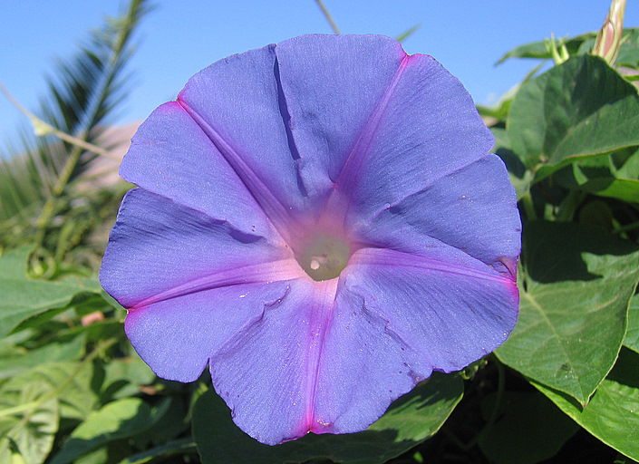
Ipomoea indica Agia Galini 25 août 2006
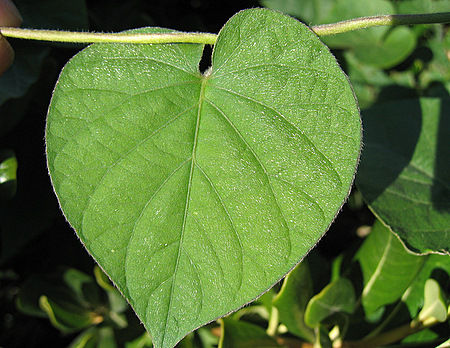 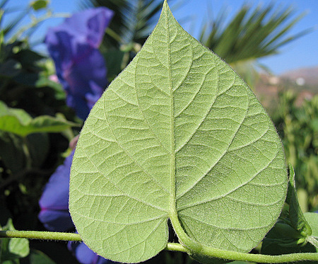
Ipomoea indica Agia Galini 25 août 2006
 MERR.")
Ipomoea indica Agia Galini 25 août 2006
Ipomoea indica Agia Galini 25 août 2006
Ipomoea indica Agia Galini 25 août 2006
Ipomoea indica Klima 24 mars 2010
| PHRYGANA | Fauna | Flora |
additions nouveautés |
espèces species |
contact -
info - commentaires phrygana1 (at) gmail.com |
| diversité crétoise -- Cretan diversity | |||||
| Ipomoea indica (BURM.) MERR. |
| 33 | Flora | CONVOLVULACEAE | Ipomoea |
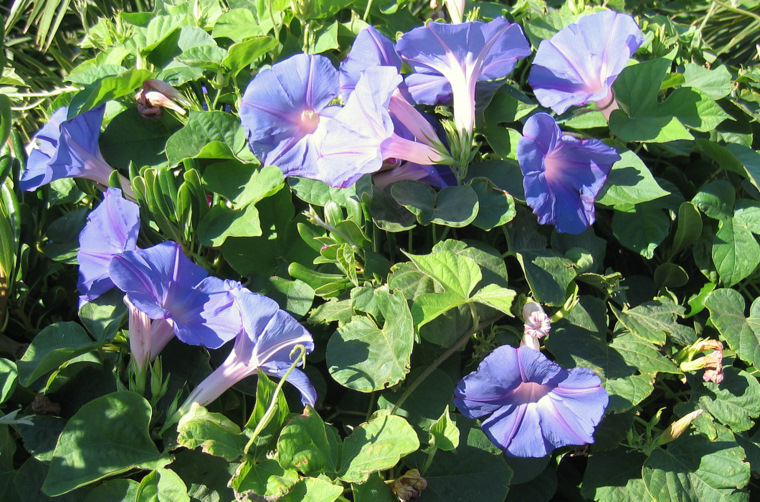 Ipomoea indica Agia Galini 25 août 2006 |
| fr: l'Ipomée des jardins en: Blue Morning Glory | |
| Synonyme: Ipomoea acuminata (VAHL) ROEHM. & SCHULT. | |
| Feuilles: entières, cordées ou à 3 lobes, légèrement pointues. | |
| Tiges rampantes ou légèrement dressées, très poilues.. | |
| Fleurs: bleues, roses, blanches ou panachées et fadissent rapidement. Corolle assez grande (50 à 85 mm), portée par un long tube. Dents du calice linéaires à très pointues et couvertes d'un duvet fin. Les inflorescences comptent parfois de nombreuses fleurs. | |
| Hauteur: 6 - 10 m | Type biologique: géophyte rhizomateux lianescent |
| Floraison: mars avril mai juin juillet août septembre octobre | |
| Altitudes: 0 - 700 m | |
| Statut en Crète: cultivé - naturalisé -- cultivated - naturalized | |
| Biotopes en Crète: jardins, terrains irrigués, bords de chemins, terrains vagues, alentours des habitations. | |
| Distribution: région Méditerranéenne | |
| Origine: régions tropicales | |
|
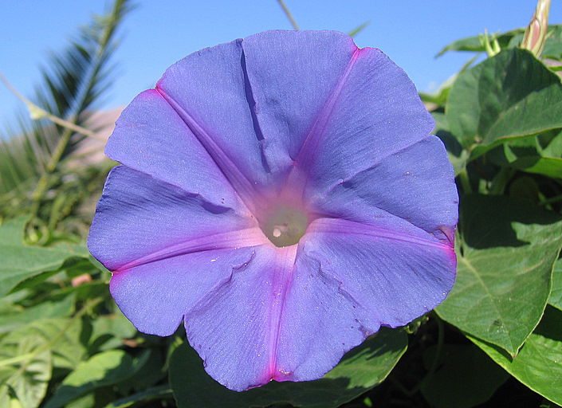 Ipomoea indica Agia Galini 25 août 2006 |
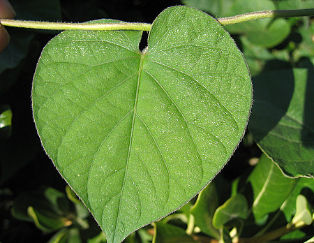 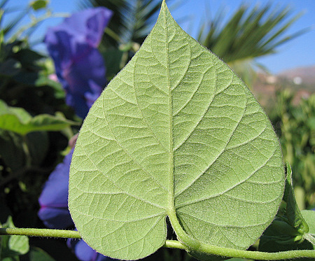 Ipomoea indica Agia Galini 25 août 2006 |
|
Ipomoea indica Agia Galini 25 août 2006 |
|
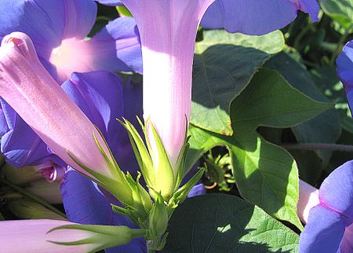
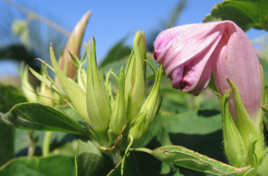 Ipomoea indica Agia Galini 25 août 2006 |
|
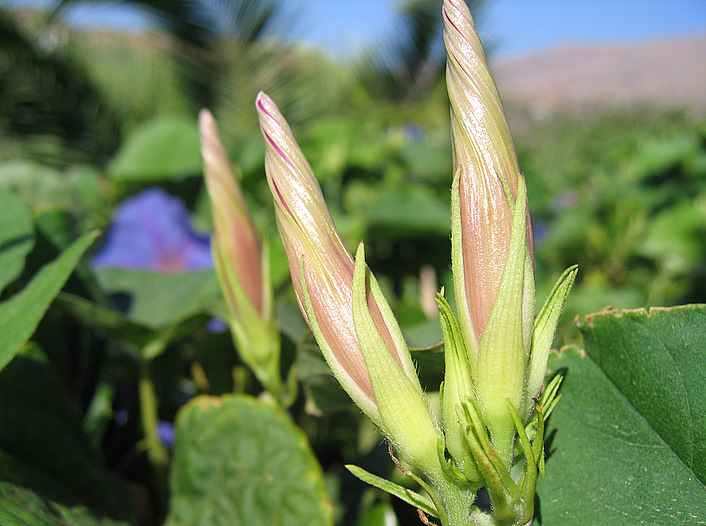 Ipomoea indica Agia Galini 25 août 2006 |
|
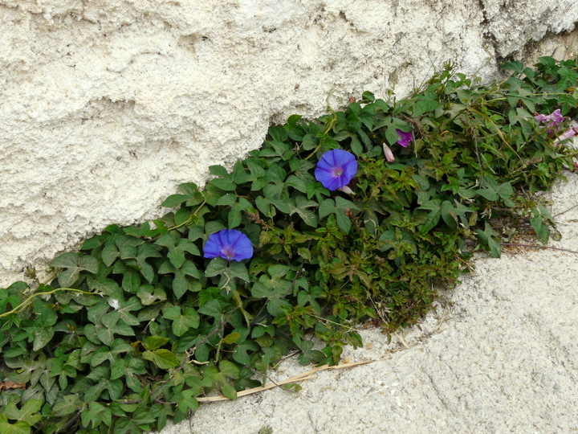 Ipomoea indica Klima 24 mars 2010 |
| 27 octobre 2010 |
| © paul fontaine -- © Phrygana.eu 2007 -- 2013 |